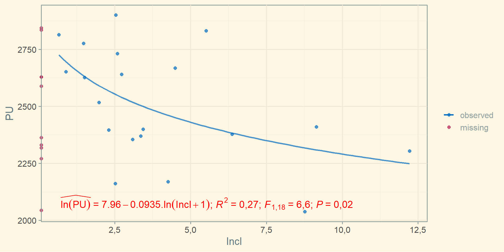
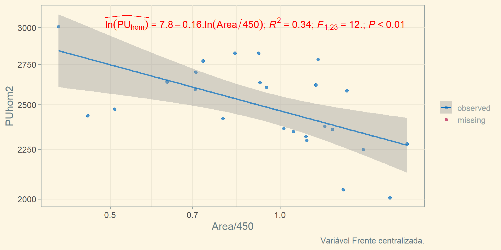
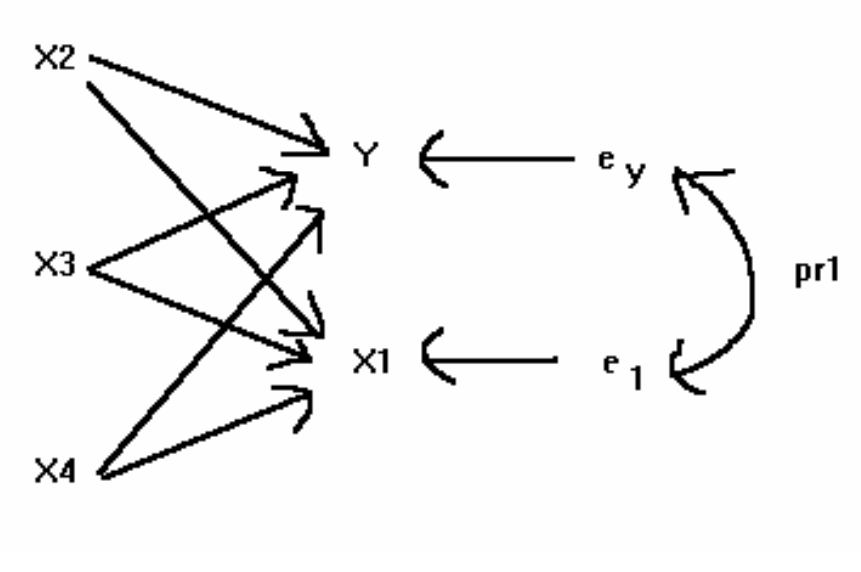
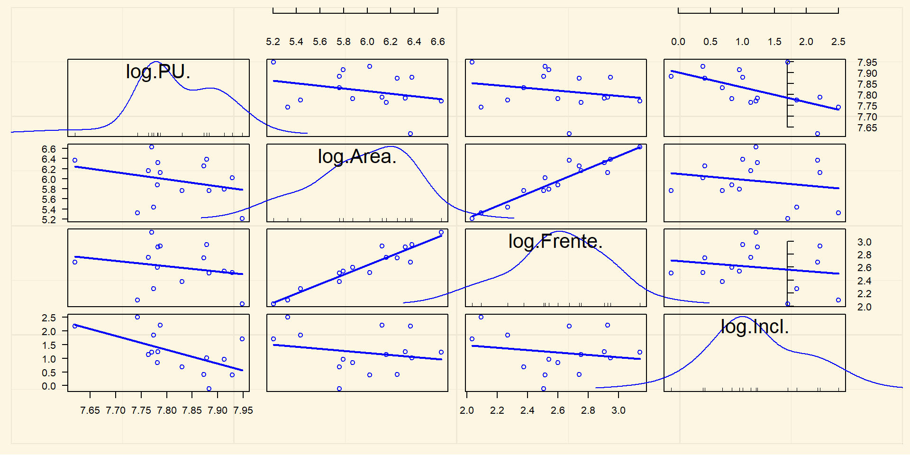
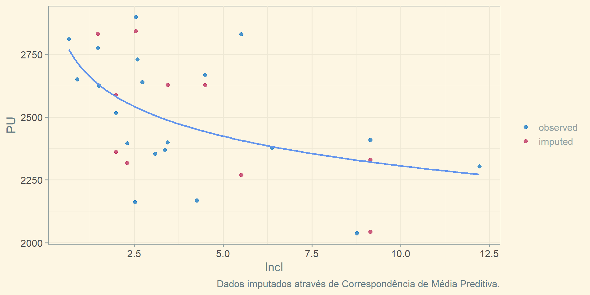

Fatores
Luiz Fernando Palin Droubi
2025-03-11
Introdução
Sobre a arte de comunicar
Comunicação não é o que você fala, é o que o outro entende!
O Tratamento Científico trouxe consistência para a Engenharia de Avaliações
O Tratamento por Fatores, contudo, não deixou de ser utilizado
- Acredita-se que, em parte, isso se deve à clareza obtida com este tipo de tratamento
A consistência alcançada com o Tratamento Científico deu-se a custa de uma perda na clareza da comunicação
É possível conciliar?
Há outras vantagens, além da clareza, na utilização do tratamento por fatores?
Cobb-Douglas
Função de Cobb-Douglas (forma mais simples):
\[Y = a.X^b\]
É possível linearizar a função de Cobb-Douglas:
\[\ln(Y) = \ln(a) + b.\ln(X)\]
O que torna fácil estimar a regressão:
\[\ln(Y) = \beta_0 + \beta_1.\ln(X) + \varepsilon\]
Uma vez estimado o modelo de regressão acima, pode-se obter \(\hat a\) e \(\hat b\):
\[\hat a = \exp(\hat \beta_0);\, \hat b = \hat\beta_1\]
A linearização está centrada na hipótese de que o erro é multiplicativo:
\(\hat \varepsilon = \frac{Y}{\hat aX^\hat b}=\frac{Y}{\hat Y}\)
Cobb-Douglas (2)
- A hipótese de que o erro é aditivo pode não ser verificada no mercado imobiliário:
Cobb-Douglas (3)
Termo de erro multiplicativo
- A hipótese dos erros multiplicativos parece mais adequada!
Cobb-Douglas (4)
Dados para exemplificar a equação de Cobb-Douglas.
Cobb-Douglas (5)
\(a = \exp(10,4) \approx 32.860,00;\, b \approx -0,25\)
\(PU = 32.860,00.Area^{-0,25}\)
Cobb-Douglas (6)
\(a = \exp(8,93) \approx 7.560,00;\, b \approx -0,25\)
\(PU = 7.560.\left (\frac{Area}{360} \right )^{-0,25} = 7.560.\left (\frac{360}{Area} \right )^{+0,25}\)
Dados de mercado
Dados
Numa amostra de dados de mercado obtivemos:
30 dados de terrenos de variadas características
Algumas variáveis foram coletadas de forma incompleta, como a variável
Frentee a variávelIncl(inclinação da superfície do terreno).
| Variable | N | Mean | Std. Dev. | Min | Pctl. 25 | Pctl. 50 | Pctl. 75 | Max |
|---|---|---|---|---|---|---|---|---|
| Area | 30 | 447 | 156 | 182 | 321 | 441 | 553 | 756 |
| Frente | 25 | 15 | 3.6 | 7.6 | 12 | 15 | 17 | 23 |
| Incl | 20 | 4 | 3 | 0.66 | 2.2 | 2.9 | 4.7 | 12 |
| PU | 30 | 2499 | 246 | 2038 | 2336 | 2463 | 2664 | 2900 |
- Nota-se que existem apenas 25 dados com a variável
Frente. - E que existem apenas 20 dados com a variável
Incl.
Modelo de Regressão Múltipla
Apenas casos completos
IC (80%)
|
||||||
|---|---|---|---|---|---|---|
| Termo | Est. | Erro | Est. t | p-valor | Inf. | Sup. |
| (Intercept) | 8,77 | 0,39 | 22,27 | 0,00 | 8,23 | 9,30 |
| log(Area) | -0,22 | 0,13 | -1,70 | 0,12 | -0,40 | -0,04 |
| log(Frente) | 0,18 | 0,17 | 1,07 | 0,31 | -0,05 | 0,42 |
| log(Incl) | -0,08 | 0,02 | -3,37 | 0,01 | -0,11 | -0,05 |
| a Dados: 15 | ||||||
| b R2: 0,57 | ||||||
| c R2aj: 0,45 | ||||||
Variável
Frentenão se mostrou significante!Por contar com apenas 15 dados completos, a estimação ficou prejudicada!
Análise exploratória
Variável Área
Variável Frente
Variável Inclinação
Derivação de Fatores
Fator Área
Dado que a área tem correlação com a variável PU, na forma log-log, pode-se assim ajustar um fator área:
\[F_a = \left ( \frac{A_{imovel}}{A_{paradigma}} \right)^{-0,15} = \left ( \frac{A_{paradigma}}{A_{imovel}} \right)^{0,15} = \left ( \frac{450}{A_{imovel}} \right)^{0,15}\]
Fator Área (2)
IC (80%)
|
||||||
|---|---|---|---|---|---|---|
| Termo | Est. | Erro | Est. t | p-valor | Inf. | Sup. |
| (Intercept) | 7,81 | 0,02 | 486,11 | 0 | 7,79 | 7,83 |
| log(Area/450) | -0,14 | 0,04 | -3,26 | 0 | -0,20 | -0,08 |
- De acordo com o modelo acima, um imóvel paradigma (
Area= 450m2), tem VM de:
Já para um imóvel de 750m2, tem-se: \(F_{Area} = (450/750)^{0,15} = 0,926\)
Para avaliar o valor de mercado do lote de 750 m2: \(E[PU|A=750] = 0,926.2.465=2282,60 \text{ R\$/m}^2\)
Fator Frente
Dado que não há evidência forte da correlação entre as variáveis
PUeFrente, pode-se concluir que a variávelFrentenão é estatisticamente significante e, portanto, não é necessário o ajuste de um fator frente!Além do mais, um fator frente assim ajustado seria contraditório: quanto maior a frente, menores os preços unitários!
Fator inclinação
Para a variável
Incl, assim como paraArea, há evidência de um efeito sobrePU.Pode-se, assim, ajustar um fator inclinação:
\(F_i = \left (\frac{i_{imovel} + 1}{i_{paradigma} + 1} \right )^{-0,10} = \left (\frac{i_{paradigma} + 1}{i_{imovel} + 1} \right )^{0,10} = \left (\frac{1}{i_{imovel} + 1} \right )^{0,10}\)
Fator inclinação (2)
IC (80%)
|
||||||
|---|---|---|---|---|---|---|
| Termo | Est. | Erro | Est. t | p-valor | Inf. | Sup. |
| (Intercept) | 7.96 | 0.06 | 141.07 | 0.00 | 7.88 | 8.03 |
| log1p(Incl) | -0.09 | 0.04 | -2.58 | 0.02 | -0.14 | -0.05 |
- Para o lote paradigma (plano): \(F_i = \left( \frac{1}{0+1}\right)^{0,10}=1,0\)
- Para um lote com inclinação igual a 5%: \(F_i = \left( \frac{1}{5+1}\right)^{0,10}=0,84\)
- O fator também deverá ser aplicado de forma multiplicativa!
- Se o lote paradigma (plano) possui valor igual a R$ 2.859,65/m2.
- Então um lote com inclinação de 5% possui VM igual a R$ 2.402,10/m2.
Reflexões
No modelo de regressão linear múltipla, com menos dados disponíveis, o efeito da variável
Frenteera positivo, porém estatisticamente insignificante.No modelo de regressão simples, com mais dados, o efeito da variável
Frentetambém se mostrou insignificante, porém negativo.Qual o efeito real da variável
Frente?
Efeito “real” da variável Frente
- Análise da variável
Frenteapós a homogeneização com o fatorArea:
Efeito “real” da variável Área
- \(R^2\) passou de 0,28 para 0,34! Coeficiente passou de -0,14 para -0,16!
Correlação Total, Parcial e Semiparcial
Modelo com regressores Area e Frente
IC (80%)
|
||||||
|---|---|---|---|---|---|---|
| Termo | Est. | Erro | Est. t | p-valor | Inf. | Sup. |
| (Intercept) | 7,81 | 0,02 | 484,15 | 0,00 | 7,79 | 7,83 |
| log(Area/450) | -0,33 | 0,11 | -3,09 | 0,01 | -0,47 | -0,19 |
| log(Frente/15) | 0,36 | 0,15 | 2,39 | 0,03 | 0,16 | 0,55 |
| a Dados: 25 | ||||||
| b R2: 0,33 | ||||||
| c R2aj: 0,27 | ||||||
A retirada de
Inclmelhora a estimação dos outros coeficientes (mais dados)!A variável
Frente, agora, demonstrou-se significante e com efeito positivo.O coeficiente de determinação diminui bastante com a retirada da variável
Incl.
Correlação de Ordem-Zero, Parcial e Semiparcial
Existem basicamente três tipos de correlação entre variáveis:
A de Pearson (ordem-zero), quando analisadas isoladamente.
A Parcial, computada enquanto se retira(m) o(s) efeito(s) de outra(s) variável(eis).
A semi-parcial, que expressa a relação única entre uma variável independente e a variável dependente.


Correlação de Ordem Zero, Parcial e Semi-Parcial (2)
| Zero-order | Partial | Part | |
|---|---|---|---|
| log(Area/450) | -0,39 | -0,55 | -0,54 |
| log(Frente/15) | -0,19 | 0,45 | 0,42 |
Na tabela acima são vistas a correlação de ordem zero, a parcial e a semi-parcial (coluna Part).
O valor da correlação semi-parcial elevado ao quadrado é também conhecido como coeficiente de determinação parcial!
Por exemplo, para a variável
Frente: \(sr_{Frente}^2 = 0,42^2 \approx 0,18\).Já para a variável
Area: \(sr_{Area}^2 = -0,54^2 \approx 0,29\)
O coeficiente de determinação parcial de uma variável representa o percentual de explicação que ela adiciona ao modelo!
- Por exemplo, a regressão simples da variável
Frentevs.PUtinha \(R^2 = 0,04\). - Adicionando a variável
Areaa este modelo, ele ficou com \(R^2 = 0,33\)!
- Por exemplo, a regressão simples da variável
Correlação de Ordem Zero, Parcial e Semi-Parcial (3)
| Zero-order | Partial | Part | |
|---|---|---|---|
| log(Area/450) | -0,39 | -0,55 | -0,54 |
| log(Frente/15) | -0,19 | 0,45 | 0,42 |
- A correlação da variável
Areacom relação à PU era fraca (\(r = -0,39\))- Porém, após a consideração da variável
Frente, essa correlação torna-se moderada (\(pr = -0,55\))!
- Porém, após a consideração da variável
- O mais importante, porém, é perceber que o sinal do coeficiente de correlação parcial muda para a variável
Frente!- A correlação da variável
Frentecom relação àPUera fraca e negativa (\(r = -0,19\)) - Porém, na presença da variável
Area, a correlação deFrenteePUpassa a ser positiva e moderada (\(pr = 0,45\))!
- A correlação da variável
- Este efeito, de mudança no sinal da correlação após a consideração de um outro regressor, é denominado de Paradoxo de Simpson!
Paradoxo de Simpson
Correlação entre Área e Frente
- Existe uma forte correlação entre os regressores!
Paradoxo de Simpson
\(\ln(PU) = \beta_0 + \beta_1.\ln(Area/450) + \beta_2.\ln(Frente/15) + \varepsilon_1\)
\(\ln(Area) = \beta_3 + \beta_4.\ln(Frente/15) + \varepsilon_2\)
\(\ln(PU) = \beta_0 + \beta_1\beta_3 + (\beta_1\beta_4 + \beta_2).\ln(Frente/15) + \varepsilon\)
\(\ln(PU) = 7,81 - 0,33.\ln(Area/450) + 0,36\ln(Frente/15) + \varepsilon_1\)
\(\ln(Area/450) = -0,01 + 1,27.\ln(Frente) + \varepsilon_2\)
\(\hat{\ln(PU)} = 7,81 + (-0,33.1,27 + 0,36).\ln(Frente/15)\)
\(\hat{\ln(PU)} = 7,81 - 0,06.\ln(Frente/15)\)
É por isso que a regressão simples com cada regressor não é, em geral, relevante para o ajuste de fatores de homogeneização!
Paradoxo de Simpson (2)
Gráficos Marginais/Condicionais
- Nos modelos de regressão linear múltipla, o efeito de uma variável é computado após a “homogeneização” da outra!
Resíduos Parciais
Derivação de Fatores a partir da RLM
IC (80%)
|
||||||
|---|---|---|---|---|---|---|
| Termo | Est. | Erro | Est. t | p-valor | Inf. | Sup. |
| (Intercept) | 7,81 | 0,02 | 484,15 | 0,00 | 7,79 | 7,83 |
| log(Area/450) | -0,33 | 0,11 | -3,09 | 0,01 | -0,47 | -0,19 |
| log(Frente/15) | 0,36 | 0,15 | 2,39 | 0,03 | 0,16 | 0,55 |
Os fatores derivados devem ser utilizados na forma multiplicativa!
- A equação de estimação será: \(PU = 2.465,00.F_{Area}.F_{Frente}\)
O fator Área seria: \(F_{Area} = \left ( \frac{450}{A_{imovel}} \right)^{0,33}\)
O fator Frente seria: \(F_{Frente} = \left ( \frac{F_{imovel}}{15} \right)^{0,36}\)
Aplicação do Fator Incl
Como vimos, é possível ajustarmos bons modelos com a remoção de uma variável que conta com muitos valores faltantes, como a variável
Incl.No entanto, se a sua remoção do modelo melhora a estimação, por outro lado, o efeito desta variável não pode ser simplesmente ignorado!
Uma alternativa é derivar o fator
Incla partir de uma regressão simples:Por exemplo, imagine a avaliação de um lote com
Area= 750m,Frente= 25m, porém com 10% de inclinação.- Pode-se aplicar o fator
Incl: \(F_i = \left (\frac{1}{i_{imovel} + 1} \right )^{0,10}\) - Assim, o valor de mercado de um lote com
Area= 750m,Frente= 25m eIncligual a 10% é igual a: - \(PU = 2.465,00.\left ( \frac{450}{A_{imovel}} \right)^{0,33}.\left ( \frac{F_{imovel}}{15} \right)^{0,36}.\left (\frac{1}{i_{imovel} + 1} \right )^{0,10}\)
- \(PU = 2.465,00.\left ( \frac{450}{750} \right)^{0,33}.\left ( \frac{25}{15} \right)^{0,36}.\left (\frac{1}{10 + 1} \right )^{0,10} \approx\)R$ 1.973,66
- Pode-se aplicar o fator
Reflexões
Análise Exploratória
Relação de Inclinação com outros regressores
- Não há, na prática, qualquer relação entre
Incle as variáveisFrenteeArea.- Isto permite que o fator
Incl, derivado a partir de uma regressão simples, seja utilizado sem qualquer preocupação a respeito de viés de variável omitida.
- Isto permite que o fator
Reflexões
No mercado imobilário existem diversas, inúmeras variáveis explicativas
Muitas delas estão correlacionadas entre si, a exemplo das variáveis
AreaeFrente- Quando as variáveis explicativas estão correlacionadas, não se pode ignorar o efeito da presença/ausência de uma sobre a outra na modelagem
Outras variáveis não estão necessariamente correlacionadas com as outras. É o exemplo da variável
Incl. Podemos também citar a variávelAndar, em apartamentos, ou a posição no andar- Quando as variáveis não estão potencialmente correlacionadas com as outras variáveis do modelo, faz sentido a derivação de um fator de maneira isolada.
- Quando a variável em análise estiver potencialmente correlacionada apenas com algumas das variáveis, pode ser necessário um modelo de regressão múltipla auxiliar com o objetivo de estimar, sem viés, o seu coeficiente.
Aparte: Imputação de dados
Aparte: imputação de dados
- Existem algoritmos de imputação de múltipla de dados, como o PMM (Rubin 1986), que permitem a imputação de dados faltantes mesmo na presença de não-linearidade ou heteroscedasticidade.

Aparte: imputação de dados (2)
Aparte: imputação de dados (3)
Modelo com dados imputados
IC (80%)
|
||||||
|---|---|---|---|---|---|---|
| Termo | Est. | Erro | Est. t | p-valor | Inf. | Sup. |
| (Intercept) | 7,97 | 0,03 | 240,54 | 0,00 | 7,93 | 8,02 |
| log(Area/450) | -0,31 | 0,07 | -4,69 | 0,00 | -0,40 | -0,23 |
| log(Frente/15) | 0,27 | 0,09 | 2,98 | 0,01 | 0,15 | 0,39 |
| log1p(Incl) | -0,11 | 0,02 | -5,18 | 0,00 | -0,14 | -0,08 |
| a Dados: 30 | ||||||
| b R2: 0,68 | ||||||
| c R2aj: 0,64 | ||||||
A imputação de dados permite o ajuste de modelos com todas as variáveis, aproveitando todas as informações disponíveis.
Este modelo pode ser utilizado, posteriormente, para o ajuste de fatores.
Aparte: imputação de dados (4)
O procedimento de imputação de dados poderia ser padronizado pela NBR 14.653, visando permitir imputações de dados, desde que baseados em procedimentos pré-definidos!
McNeish (2017): Melhor método para imputação de dados em pequenas amostras: joint multiple imputation (JMI)!
Bayesian linear model fitted with JointAI
Call:
lm_imp(formula = logPU ~ logArea + logFrente + logIncl, data = dados,
n.iter = 1000, seed = 1)
Posterior summary:
Mean SD 2.5% 97.5% tail-prob. GR-crit MCE/SD
(Intercept) 7.9370 0.0445 7.8518 8.0233 0.00000 1.00 0.0285
logArea -0.3354 0.1144 -0.5496 -0.1086 0.00933 1.06 0.0824
logFrente 0.2932 0.1630 -0.0292 0.5923 0.06867 1.04 0.0677
logIncl -0.0894 0.0302 -0.1451 -0.0337 0.00600 1.00 0.0277
Posterior summary of residual std. deviation:
Mean SD 2.5% 97.5% GR-crit MCE/SD
sigma_logPU 0.0707 0.0156 0.0522 0.0974 1.01 0.0256
MCMC settings:
Iterations = 1:1000
Sample size per chain = 1000
Thinning interval = 1
Number of chains = 3
Number of observations: 30 Fatores Aditivos
Introdução
Os fatores multiplicativos derivam de um modelo multiplicativo
- \(PU = \beta_0.\exp(\beta_1)^{X_1}\ldots\exp(\beta_k)^{X_k}.\varepsilon\)
Da mesma maneira, os fatores aditivos, devem ser derivados de um modelo aditivo
- \(PU = \beta_0+\beta_1X_1 + \ldots + \beta_kX_k + \varepsilon\)
Apesar do erro dificilmente aparecer no mercado imobiliário na forma aditiva
Existem técnicas que permitem o ajustamento de modelos com erros não-constantes
Trabalhar na escala original (PU) tem algumas vantagens
- Ausência de distorções devido às transformações
- Desnecessidade de retransformação da variável
Derivação de Fatores Aditivos
Como bem observou Lima (2006), se na avaliação por fatores aditivos, temos:
- \[\hat{PU_i} = \bar{PU}_{hom}.[1 + (F_{1i}-1) + (F_{2i}-1) + \ldots + (F_{ki}-1)]\]
E na avaliação por regressão múltipla, temos:
- \[\hat{PU_i} = \hat{\beta_0}.+ \hat{\beta_1}X_{1i} + \hat{\beta_2}X_{2i} + \ldots + \hat{\beta_k}X_{ki}\]
\[\therefore \left\{\begin{matrix} \hat\beta_0 = \bar{PU}_{hom} \\ F_{1i}=\hat{\beta_1}/\hat{\beta_0}.X_{1i} \\ F_{2i}=\hat{\beta_2}/\hat{\beta_0}.X_{2i} \\ \cdots \\ F_{ki}=\hat{\beta_k}/\hat{\beta_0}.X_{ki} \end{matrix}\right.\]
Porém, quem disse que \(\hat\beta_0 = \bar{PU}_{hom}\)?
- \(\hat\beta_0 = \bar{PU}_{hom}\Leftrightarrow\) as variáveis explicativas estiverem centralizadas!
Modelo aditivo minimalista
IC (80%)
|
||||||
|---|---|---|---|---|---|---|
| Termo | Est. | Erro | Est. t | p-valor | Inf. | Sup. |
| (Intercept) | 6.147,07 | 730,27 | 8,42 | 0,00 | 5.205,49 | 7.088,65 |
| PCMedio | 2.048,54 | 630,82 | 3,25 | 0,00 | 1.235,18 | 2.861,90 |
| PCAlto | 5.151,55 | 816,10 | 6,31 | 0,00 | 4.099,30 | 6.203,80 |
| Ano_2022 | 3.623,05 | 399,73 | 9,06 | 0,00 | 3.107,65 | 4.138,45 |
| I(Idade - 10) | -116,45 | 24,77 | -4,70 | 0,00 | -148,39 | -84,51 |
| log(AP/100) | -1.049,06 | 473,70 | -2,21 | 0,03 | -1.659,84 | -438,28 |
| a Dados: 115 | ||||||
| b R2: 0,80 | ||||||
| c R2aj: 0,79 | ||||||
- Como as variáveis explicativas estão centralizadas no imóvel paradigma, então \(\hat\beta_0 = \bar{PU}_{hom}\)!
Interpretação das variáveis
Para uma derivação formal dos fatores, podem ser utilizadas as derivadas parciais da equação de regressão em relação a cada termo.
Para a variável
Ano:\[\frac{\partial PU(PC, Ano, Idade, AP)}{\partial \text{Ano}} = \frac{\partial 3.623,05.\text{Ano}}{\partial \text{Ano}} = 3.623,05\]
\(\therefore \delta PU = 3.623,05.\delta Ano\)
Para a variável
Idade: \[\frac{\partial PU(PC, Ano, Idade, AP)}{\partial \text{Idade}} = \frac{\partial -116,45.(\text{Idade-10})}{\partial \text{Idade}}=-116,45\]\(\therefore \delta PU = -116,45.\delta Idade\)
Ou seja, se a Idade do avaliando for 5 anos (\(\delta Idade = -5\)), então \(F_{Idade} = -116,45.(-5) = +582,25\)
Interpretação das variáveis (2)
Para a variável
Area:\[\frac{\partial PU(PC, Ano, Idade, AP)}{\partial AP} = -1.049,06 \frac{\partial log(AP/100)}{\partial AP}\]
\[\frac{\partial PU}{\partial AP} = -1.049,06\frac{1}{AP} \Leftrightarrow \delta PU = -1.049,06 \frac{\delta AP}{AP}\]
O aumento de 1% em
APcorresponde a uma diminuição de -R$ 10,49 em PU!Cuidado: a interpretação acima vale para pequenos percentuais de variação!
O fator área deve ser calculado: \(F_{Area} = -1.049,06.\ln(Area/100)\)
- Por exemplo: para um imóvel com área igual a 272 \(m^2\):
- \(F_{Area}=-1.049,06.\ln(272/100) = -1.049,06 \text{ R\$}/m^2\)
Não é possível utilizar fatores do tipo: \(\left(\frac{X_{imóvel}}{X_{paradigma}}\right)^\alpha\) de forma aditiva
Derivação de Fatores Aditivos
Com o método de Lima (2006) ajustado
- Fator Padrão Construtivo:
- \[F_{PC} = \begin{cases} 6.147,07/6.147,07 = 1,00 & \text{ se } PC=Baixo \\ (6.147,07+2.048,54)/6.147,07 = 1,33 & \text{ se } PC=Medio \\ (6.147,07+5.151,55)/6.147,07 = 1,84 & \text{ se } PC=Alto \end{cases}\]
- Fator Idade:
- \[F_{Idade} = -0,019.(Idade-10) + 1\]
- Fator Ano:
- \[F_{Ano} = \begin{cases} 6.147,07/6.147,07 = 1,00 & \text{ se } Ano = 2018\\ (6.147,07+3.623,05)/6.147,07 = 1,59 & \text{ se } Ano = 2022 \end{cases}\]
Derivação de Fatores Aditivos
Com o método de Lima (2006) ajustado
Fator AP:
- \[F_{AP} = \frac{-1.049,06}{6.147,07}.\ln(AP_{imovel}/AP_{paradigma})+1=-0,17.\ln(AP_{imovel}/100)+1\]
Aplicação: Se o imóvel paradigma (100m2, ano 2018, 10 anos de idade, PC Baixo) tem valor unitário de mercado igual a R$ 6.147,07/m2
Quanto vale um apartamento de 200m2, 5 anos de idade, PC Médio, no ano de 2022?
- \(PU_i=6.147,07[1+[(1,33-1)+(1,095-1)+(1,59-1)+(0,88-1)]\)
- \(PU_i=6.147,07[1+(0,33+0,095+0,59-0,12)]\)
- \(PU_i=6.147,07.1,895\)
- \(PU_i=11.648,70\)
Comparação com previsões do modelo
- O método de Lima (2006) funciona!
- Porém, deve-se perceber: só funcionou porque o modelo foi ajustado centralizado no imóvel paradigma.
- Assim, o valor de \(\beta_0\) se igualou ao valor do imóvel paradigma e permitiu a estimação consistente dos fatores de homogeneização!
Conclusão
Conclusão
- Este é um modelo ruim, além de mal comunicado:
- \(VU = -566,45-3,0555.10^{-9}.A^3 +548,17.\text{SetorUrbano}^{0,5}+143,27.\ln(Frente(\text{qualitativa}))\)
- Este é um bom modelo, porém ainda mal comunicado:
- \(\hat{\ln(PU)} = 4,768-0,2703.\ln(A) + 0,2339.\ln(\%T)-0,0983.\ln(D)+0,3735.G+0,5186.I + \varepsilon\)
- Este é um bom modelo, porém melhor comunicado:
- \(\hat{PU} = 117,68.A^{-0,270}.(\%T)^{0,234}.D^{-0,098}.1,45^{G}.1,68^I\)
- A centralização dos dados melhora a comunicação:
- \(\hat{PU} = 3,10.(A/1500)^{-0,270}.(\%T/25\%)^{0,234}.(D-100)^{-0,098}.1,45^{G}.1,68^I\)
- Argumento que, assim, o modelo poderia ser ainda melhor exposto:
- \(\hat{PU} = 3,10.F_{Area}.F_{\%Terreo}.F_{Distância}.F_{Garagem}.F_{Idade}\)
Conclusão
Os fatores de homogeneização continuam úteis!
Com os novos estudos, agora estão se tornando também, consistentes!
A centralização de variáveis é importante para garantir uma estimação consistente dos fatores de homogeneização
A independência ou correlação entre os regressores é importante para fins de definir se um fator pode ser ajustado através de uma regressão simples
A clareza do Tratamento por Fatores deve ser trazida para o Tratamento Científico
E a consistência do Tratamento Científico deve ser levada para o Tratamento por Fatores!
Referências
Cerino, Rocío Mariel, Juan Pablo Carranza, Mario Andrés Piumetto, María Emilia Bullano, Federico Monzani, and Mariano Augusto Córdoba. 2020. “Homogeneización Del Valor de La Tierra Urbana Mediante Técnicas de Econometría Espacial En Valuaciones Masivas Automatizadas.” 14º COBRAC. https://rdu.unc.edu.ar/handle/11086/28446.
Droubi, Luiz Fernando Palin, and Lutemberg de Araújo Florencio. 2024a. “Fatores de Homogeneização: Derivação e Uso Racional.” XXXVIII Congresso Pan-Americano UPAV – CHILE 2024. https://www.upavchile2024.com/.
———. 2024b. “Mínimos Quadrados Ponderados: Vantagens e Aplicação Na Engenharia de Avaliações.” Revista Valorem 1 (1): 33–41. https://revistavalorem.com/index.php/home/article/view/24.
Lima, Gilson Pereira de Andrade. 2006. “Homogeneização Por Fatores Na Forma Aditiva, Multiplicativa Ou Mista? Imposição Normativa Ou Resposta Do Mercado?” XIII COBREAP.
McNeish, Daniel. 2017. “Missing Data Methods for Arbitrary Missingness with Small Samples.” Journal of Applied Statistics 44 (1): 24–39. https://doi.org/10.1080/02664763.2016.1158246.
Oliveira, Antônio Augusto Ferreira de, Sandro Ricardo Vasconcelos Bandeira, and Victor Jucá Távora. 2024. “Mass Appraisal of Urban Land with Homogenization Factors: A Spatial Models-Based Approach.” Revista Valorem 1 (1): 16–32. https://revistavalorem.com/index.php/home/article/view/23.
Romano, Joseph P., and Michael Wolf. 2017. “Resurrecting Weighted Least Squares.” Journal of Econometrics 197 (1): 1–19. https://doi.org/https://doi.org/10.1016/j.jeconom.2016.10.003.
Rubin, Donald B. 1986. “Statistical Matching Using File Concatenation with Adjusted Weights and Multiple Imputations.” Journal of Business & Economic Statistics 4 (1): 87–94. https://doi.org/10.1080/07350015.1986.10509497.
Trivelloni, Carlos Alberto Peruzzo. 2005. “Método Para Determinação Do Valor Da Localização Com Uso de Técnicas Inferenciais e Geoestatísticas Na Avaliação Em Massa de Imóveis.” Tese de Doutorado, Florianópolis, SC: Universidade Federal de Santa Catarina.